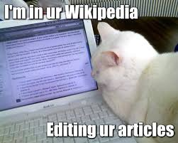
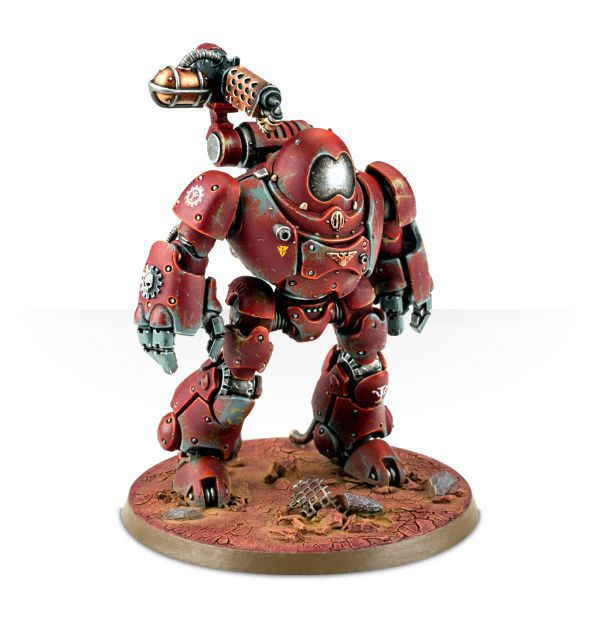

<div style="background: red; height: 50px">
</div>
<div style="display: flex; background: pink">
	<div style="margin-left: 200px; background: yellow; width: 300px; height: 500px; margin-top: 20px">
		<div style="margin-left: 20px">
			<a style="text-decoration: none; color: white" href="http://gothic.ag.ru/g2">
				Моя страница
			</a>
		</div>
		<div style="margin-left: 20px">
			<a style="text-decoration: none; color: blue" href="http://ru.warhammer40k.wikia.com/wiki/%D0%A5%D0%BE%D1%80%D1%83%D1%81">
				Новости
			</a>
		</div>
		<div style="margin-left: 20px">
			<a style="text-decoration: none; color: red" href="https://ru.wikipedia.org/wiki/%D0%97%D0%B0%D0%B3%D0%BB%D0%B0%D0%B2%D0%BD%D0%B0%D1%8F_%D1%81%D1%82%D1%80%D0%B0%D0%BD%D0%B8%D1%86%D0%B0">
				Сообщения
			</a>
		</div>
	</div>
	<div style="margin-left: 20px; background: green; width: 300px; height: 600px; margin-top: 20px">
		<a href="https://www.yahoo.com">
			
		</a>
		<a href="https://www.youtube.com/watch?v=GXI0l3yqBrA">
			
		</a>
	</div>
	<div style="margin-left:20px; background: cyan; width: 800px; height: 600px; margin-top: 20px">
		<iframe width="800" height="600" src="https://www.youtube.com/embed/Lm76VJxVVxI" frameborder="0" allow="accelerometer; autoplay; encrypted-media; gyroscope; picture-in-picture" allowfullscreen>
		</iframe>
	</div>
</div>

